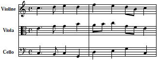

T:Auf einem Baum ein Kuckuck
M:C
L:1/8
K:C
G4 | E C E G GF D2 |
w:Auf | ei-nem Baum ein Kuc_kuck |
<< vorige / nächste Seite >> · Musik – Abc-Notation Teil 2
Diese Seite beschreibt Teile der Abc-Musiknotation. Zur Einführung siehe Teil 1.
Kopffelder: K: Key · L: Länge · M: Metrum · P: Parts · Q: Tempo · T: Titel · U: User · V: Voice · W: Text · w: Text mit Noten · X: Index · Weitere Kopffelder · Verzierungen · Akzente und Symbole · Vermerke · Weblinks
So wie klassische Notenschrift stets mit Notenschlüssel, Vorzeichen und Taktangabe beginnt,
so beginnt Abc-Notation stets mit einer Reihe von Kopffeldern.
Jedes Kopffeld muss auf einer eigenen Zeile stehen.
Leerzeilen sind nicht zulässig, weil Computerprogramme sonst annehmen,
dass das Lied schon zu Ende ist.
Die folgenden fünf Kopffelder sind obligatorisch, weitere sind optional:
X: Indexnummer
T: Titel
M: Metrum
L: Standard-Notenwert
K: (Key) Tonart
Im Kopffeld „X:“ (Index) steht eine fortlaufende Nummer des Stücks. Dieses Feld muss stets als allererstes stehen, auch wenn keine Nummerierung gebraucht wird, weil Computerprogramme es als Erkennungszeichen benötigen. Wenn du einfach nur X:1 schreibst, ist es in Ordnung.
Im Feld „T:“ (Titel) steht der Titel des Stücks.
Ein Titel sollte immer angegeben werden, damit man das Stück leicht wiederfinden kann.
Wenn ein Stück mehrere Titel hat, kann man auch mehrere T:-Zeilen angeben.
Beispiel:
T:Alle meine Entchen
Im Feld „M:“ (Metrum) steht die Taktart, z. B.:
M:6/8
M:4/4 oder
M:3/4 oder
M:2/2 oder
M:C (entspricht M:4/4) oder
M:C| (entspricht M:2/2).
Eine M:-Zeile kann auch zwischen Melodiezeilen stehen, um einen Taktwechsel anzuzeigen.
Im Feld „L:“ (Length) wird ein
Notenwert
als Standard festgelegt, z. B.:
L:1/8 heißt: Standardmäßig werden für alle Töne Achtelnoten angenommen,
sofern sie nicht durch besondere Zeichen verlängert oder verkürzt werden.
L:1/4 heißt: Standardmäßig werden Viertelnoten angenommen,
sofern sie nicht verlängert oder verkürzt werden.
Um den Abc-Code übersichtlich zu halten, sollte stets derjenige Notenwert
als Standard festgelegt werden, der im Stück durchschnittlich am meisten vorkommt.
Eine L:-Zeile kann auch zwischen Melodiezeilen stehen, um den Standard-Notenwert zu ändern.
Im Feld K: (Key) wird die Tonart angegeben. Die K:-Zeile muss immer als letzte Kopfzeile unmittelbar vor der Melodie stehen. Sie darf aber auch zwischen Melodiezeilen vorkommen, um die Tonart zu wechseln.
Beispiele:
K:C oder
K:Cmaj für C-Dur,
K:Am oder
K:Amin für A-Moll,
K:F#m für Fis-Moll
K:Eb für Es-Dur
K:Bm für H-Moll! *
* Achtung bei „B“ und „H“: Die Tonart wird hier in englischer Schreibweise angegeben. Man schreibt also immer „B“ statt „H“! Wenn wirklich das deutsche „B“ gemeint ist (ein Halbton tiefer als H), schreibt man hier „Bb“.
Auch Kirchentonarten sind möglich; man schreibt z. B. K:C dor oder K:Cdor oder K:C dorian für C dorisch.
Vorm Kopffeld K:, das immer als letztes stehen soll,
können auch noch weitere Kopffelder eingefügt werden:
A: (Area) Geografische Region
B: Buch
C: (Composer) Komponist. Bei Volksliedern unbekannter Herkunft schreibt man C:Trad (traditionell)
D: Diskographie
F: (File name) Dateiname
G: (Group) Stimmgruppe, Z. B. „Flöten“
H: (History) Herkunft
I: Information – wird von einigen Computerprogrammen verwendet
N: Notizen – alle übrigen Informationen, die sonst nirgends passen.
Wenn eine Zeile nicht reicht, kann man beliebig viele N:-Felder hinzufügen.
O: (Origin) Herkunft
P: Parts, Teile
Q: Tempo
R: Rhythmus – kann als beliebiger freier Text angegeben werden, z. B. jig, reel, waltz
S: (Source) Quellenangabe
U: (User defined) Nutzerdefinierte Symbole
V: (Voice) Mehrstimmige Partitur
W: (Words) Liedtext
Z: Transskription – wer das Stück in Abc übertragen hat, oder woher die Abc-Notation stammt
Wenn ein Stück aus mehreren Teilen besteht, die in unterschiedlicher Reihenfolge wiederholt werden,
kann im Kopffeld P: der Ablauf angegeben werden, z. B.:
P:ABAABBC
Innerhalb der Melodie wird dann der betreffende Teil mit
P:A, P:B, P:C eingeleitet.
Wiederholungen von Parts kann man auch mit vorangestellten Ziffern schreiben:
P:AAABBB = P:3A3B
Man kann auch Abschnitte klammern und Wiederholungsziffern vor die Klammer schreiben:
P:ABABAB = P:3(AB)
Und Punkte dazwischen setzen, um es lesbarer zu machen:
P:3A3B2(2A2B) = P:3A.3B.2(2A2B)
Im Kopffeld Q: kann ein Tempo angegeben werden, z. B.:
Q:1/4 = 120, d. h. Viertelnoten mit 120 Schlägen pro Minute.
Statt 1/4 kann auch 1/8 oder 1/2 oder irgendein anderer Notenwert stehen.
Wenn es der Standard-Notenwert ist, kann man ihn auch weglassen und schreiben:
Q:120
Eine Q:-Zeile kann auch zwischen Melodiezeilen stehen, um das Tempo zu ändern.
In Kopffeldern W: kann der Text eines Liedes erfasst werden. Solcher Text wird jedoch nicht an den Noten ausgerichtet. Er erscheint nur als zusammenhängender Block. Sollen Textzeilen Silbe für Silbe unter den Noten stehen, muss man sie anders schreiben.
Verzierungen, z. B. Triller, Vorschläge oder Doppelschläge werden in Abc selten notiert.
Meist schreibt man schlicht die Melodie und überlässt es den Interpreten,
Verzierungen nach eigenem Geschmack einzufügen.
Standard-Abc bietet hier nur zwei Möglichkeiten: Man kann entweder eine Tilde voranstellen:
~G2
um anzuzeigen, dass eine Note irgendwie verziert werden soll, oder
Vorschlagsnoten
in geschweiften Klammern schreiben:
{FGFE}F2
Solche Vorschlagsnoten haben keine bestimmte Länge; es ist also sinnlos,
ihre Länge mit /, > oder Ziffern zu verändern.
Es gibt auch noch weitere Zeichen für Verzierungen und Spielanweisungen, die aber nicht allgemein anerkannter Abc-Standard sind:
Die folgenden Elemente sind Erweiterungen des Abc-Standards,
die eventuell nicht von allen Computerprogrammen erkannt werden:
H Fermate
J Slide, Rutscher von unten
L Akzent (Betonung)
M Mordent
O Coda
P Pralltriller
S Segno
T Triller
!+! Pizzicato für Streicher
!0! bis !5! Fingersätze
!D.C.! Da capo
!D.S.! Da segno
!accent! Akzent über der Note
!arpeggio! Arpeggio (Schlangenlinie neben einem Akkord)
!breath! Atemzeichen
!coda! Coda
!crescendo(! Beginn Crescendo
!crescendo)! Ende Crescendo
!diminuendo(! Beginn diminuendo
!diminuendo)! Ende Diminuendo
!downbow! Abstrich
!emphasis! Akzent
!fermata! Fermate
!f!, !ff!, !fff! Forte, Fortissimo
!fine! Fine
!invertedfermata! Umgekehrte Fermate
!longphrase! Verkürzter Taktstrich
!lowermordent! Mordent
!mediumphrase! Halber Taktstrich
!mf! Mezzoforte
!mordent! Mordent
!open! Leere Saite
!p!, !pp!, !ppp! Piano, Pianissimo
!pralltriller! Pralltriller
!repeatbar! Vorigen Takt wiederholen
!repeatbar2! Vorige 2 Takte wiederholen
!roll! Doppelschlag
!segno! Segno
!shortphrase! Kurzer Taktstrich
!slide! Slide, Rutscher von unten
!snap! Bartók-Pizzicato
!tenuto! Tenuto (Note in voller Länge aushalten)
!thumb! Cello-Daumensymbol
!trill! Triller
!turn! Gruppetto
!upbow! Aufstrich
!uppermordent! Pralltriller
!wedge! Keil, Pfeilspitze
Manche Programme gestatten es, in Kopffeldern U:
Abkürzungen für Symbole !...! zu definieren, z. B.:
U: R = !roll!
Mit dieser Definition kann der Buchstabe R künftig als Abkürzung
für !roll! benutzt werden.
Spielanweisungen, für die es kein Symbol gibt,
können als Texte in Anführungszeichen eingefügt werden:
"^text" Vermerk über der Note
"_text" Vermerk unter der Note
"<text" Vermerk links neben der Note
">text" Vermerk rechts neben der Note
"@text" Vermerk an beliebiger Stelle
Mit dem Kopffeld V: können Notensysteme als mehrstimmige Partitur angeordnet werden. Optional kann man darin den Stimmen auch lange und kurze Namen geben und den Notenschlüssel festlegen:
| Abc-Notation | Umsetzung in herkömmliche Noten |
|---|---|
|
X:1
T:Einigkeit und Recht und Freiheit M:C L:1/4 K:C V:1 name="Violine" snm="vi" clef=treble c>d e d | f e d/B/ c | V:2 name="Viola" snm="vl" clef=alto E>G G B | A/B/ c G/F/ E | V:3 name="Cello" snm="c" clef=bass C,>B,, C, G,, | D, E, G, C, | |  |
In Standard-Abc werden Liedtexte in den Kopffeldern W: erfasst. Dort bilden sie jedoch nur einen kompakten Textblock ohne direkten Bezug zu den Noten. Text, der Silbe für Silbe singbar unter die Noten gedruckt wird kann eventuell mit folgender Erweiterung erfasst werden:
| Abc-Notation | Umsetzung in herkömmliche Noten |
|---|---|
|
X:1
T:Auf einem Baum ein Kuckuck M:C L:1/8 K:C G4 | E C E G GF D2 | w:Auf | ei-nem Baum ein Kuc_kuck | |
|
Man schreibt abwechselnd eine Zeile Melodie, dann eine w:-Zeile mit Text; oder mehrere w.:-Zeilen für verschiedene Strophen. Folgende Symbole helfen den Text an den Noten auszurichten:
Leerzeichen: Trennt Wörter – pro Wort eine Note
- Bindestrich: Trennt die Silben – pro Silbe eine Note
| Weiter zum nächsten Taktstrich
_ Vorige Silbe auf einer weiteren Note aushalten
* Note auslassen
~ Wörter auf eine Note zusammenziehen
\- Bindestrich ausgeben
\ am Zeilenende bedeutet: das nächste w:-Feld gehört immer noch zur selben Zeile
Abc notation home page · Software · How to interpret abc music notation · Abc converter at mandolintab.net
<< vorige / nächste Seite >> · Musik · Impressum · http://Penzeng.de/Musik